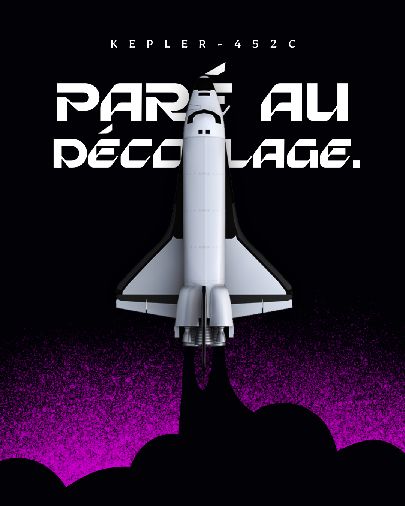

2047. Des télescopes de nouvelle génération détectent des signatures atmosphériques inexpliquées sur Kepler-452c, une planète rocheuse à 1 400 années-lumière de la Terre. Une découverte qui allait changer l'histoire de l'humanité.
Dix ans plus tard, l'Agence Spatiale Internationale lance le programme Aurora : concevoir et construire le premier vaisseau interstellaire habité. Un budget de 2 000 milliards de crédits. Un objectif : atteindre Kepler-452c.
2077. L'Odyssey IV quitte l'orbite terrestre sous les yeux de 8 milliards de témoins. À son bord, six astronautes sélectionnés parmi 12 000 candidats, porteurs de l'espoir de toute une espèce.
Aujourd'hui, en 2079, l'Odyssey IV est en orbite autour de Kepler-452c. Nous attendons les premières images de la surface. Le monde retient son souffle.